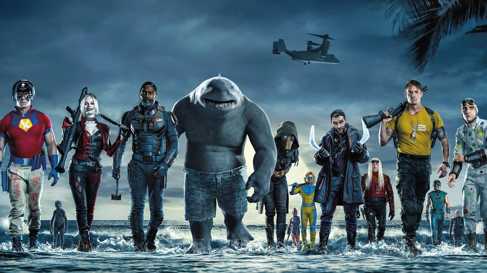

El Escuadrón Suicida

Descripcion
James Gunn abandonó temporalmente a sus Guardianes de la Galaxia del UCM de Marvel para adentrarse en el universo de DC y otro grupo de inadaptados, los antihéroes del Escuadrón Suicida. El grupo de villanos, con Harley Quinn (Margot Robbie) a la cabeza, tiene que acatar las órdenes de Amanda Waller si quiere mantener la cabeza en su sitio.